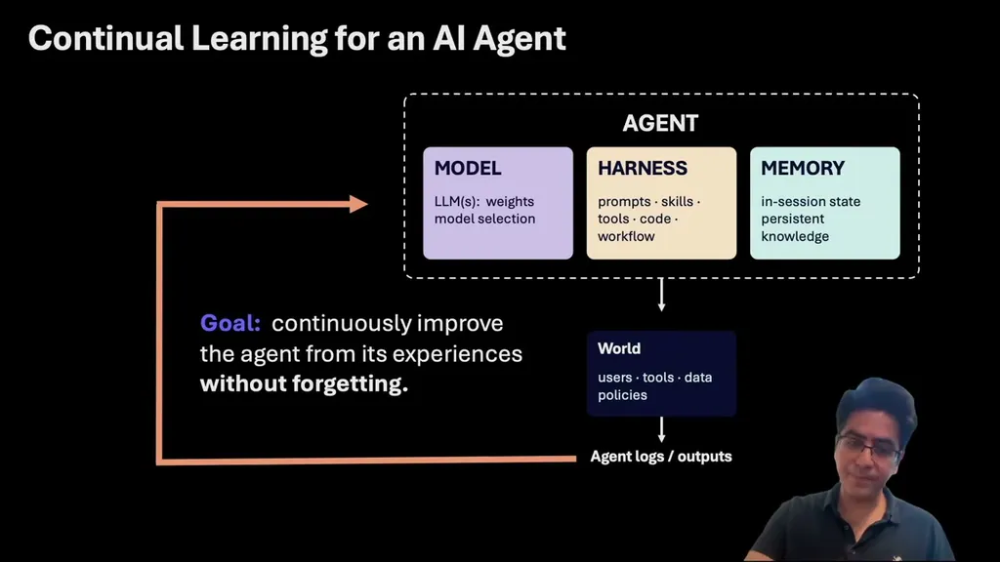
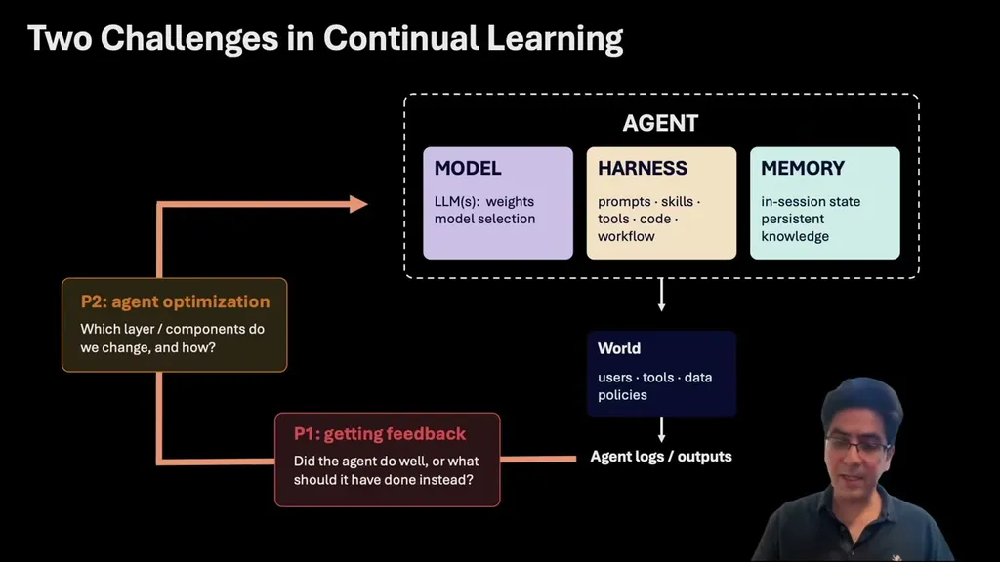
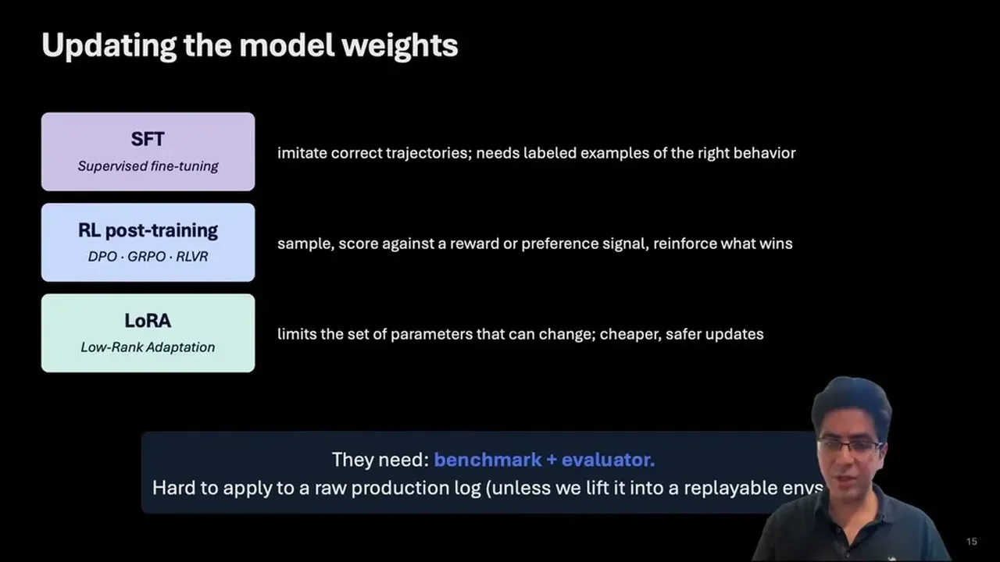
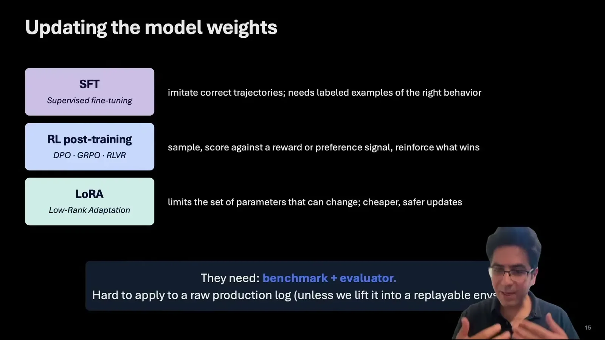

The speaker frames continual learning for agents around two problems: how to get feedback on whether the agent did well, and how to act on that feedback to optimize the agent across its model, harness, and memory layers.
“there are two, I would say, fundamental challenges in continual learning for agents. The first challenge is how to get feedback. How do we know if the agent did well?”
▶ watch at 01:35
In production there's no benchmark, only session logs, which can be scored automatically by other models/LLMs or by human experts, but even log-plus-feedback isn't testable. The speaker argues it must be lifted into a replayable learning environment -- a simulation with defined success criteria, mocked or real tools, and possibly synthetic users -- before any fix can be verified.
“what we really need is a replayable learning environment, a simulation that we can rerun with defined grading on what success looks like”
▶ watch at 04:10“production logs are not learning environments. We need to transform them into replayable learning environments to simulate and evaluate the agent on the same patterns and scenarios”
▶ watch at 21:50
Model-weight updates (SFT, RL methods like DPO/GRPO/RLVR) require benchmarks and explicit evaluators and are expensive to run. Harness-layer trace-to-harness approaches can act directly on a single log-plus-feedback case but are not testable, so effectiveness on that case and impact on other cases is unknown. Memory-layer updates (writing facts, distilling skills) are the cheapest and fastest but are typically unverified.
“these methods, they usually need benchmarks and explicit evaluators. They cannot be directly applied on, let's say, if you have a log and feedback”
▶ watch at 08:20“We don't know if even for that particular uh sample, if the change is effective, because it is not testable. And we don't know what is the impact of it on other samples”
▶ watch at 08:50“this layer in terms of the update is cheapest and fastest. It works directly on the cases where you only have log and feedback, but usually it is unverified”
▶ watch at 10:40
Verifiable continual learning is defined as improving an agent from its own experience where every fix is proven to help and proven to break nothing that already worked. Its holisticness principle holds that one failure can have several possible causes across memory, prompt, tools, workflow, or model, illustrated by an agent that cites a stale policy and skips a required escalation. Its lifelongness principle calls for regression-aware optimization built into the loop itself rather than checked after the fact.
“the goal is to improve an agent from its his own experience where every fix is proven to help and proven to break nothing that already worked”
▶ watch at 10:55“you have an agent that cites a stale policy and skips the required escalation. The issue might come from the memory where you have some stale fact”
▶ watch at 12:25“A better approach is a regression aware learning where the regression is not be treated as a post-hoc approach, but as a mechanism within the optimization itself”
▶ watch at 13:58
In a fictional support-agent benchmark with regression traps, applying the vendor's optimizer for one loop produced a 10% average improvement, raising the score from 87% to 97%.
“the average improvement uh, can be um, quite high. Uh, it is 10% improvement on average just with one loop and score increases to 97% from 87%”
▶ watch at 20:20The framing of memory writes as 'cheapest, fastest, but unverified' is a useful counterweight to memory-layer hype -- it implies teams should pair any memory-write agent pattern with some form of regression testing rather than trusting it to self-correct (ours).
| Stance | Claim | t |
|---|---|---|
| asserts | Continual learning for agents faces two fundamental challenges: getting feedback on agent performance and acting on that feedback to improve the agent. | 01:35 |
| warns | Session logs plus feedback aren't sufficient because they aren't testable; they need to become a replayable learning environment with defined grading. | 04:10 |
| asserts | Model-weight update methods like SFT and RL require benchmarks and explicit evaluators and can't be applied directly to a log-plus-feedback case. | 08:20 |
| warns | Trace-to-harness fixes are not testable, so it's unknown whether the change is effective even on the original sample or what impact it has elsewhere. | 08:50 |
| warns | Memory-layer updates are the cheapest and fastest way to act on log-plus-feedback data, but they are usually unverified. | 10:40 |
| asserts | Verifiable continual learning improves an agent from its own experience where every fix is proven to help and proven to break nothing that already worked. | 10:55 |
| asserts | A single failure, like an agent citing a stale policy and skipping escalation, can trace to memory, prompt, tools, workflow, or model, and the fix should route to the right layer. | 12:25 |
| recommends | Regression should be treated as a mechanism built into the optimization loop itself rather than checked as a post-hoc step. | 13:58 |
| asserts | One optimization loop on a support-agent benchmark produced a 10% average improvement, raising the score from 87% to 97%. | 20:20 |
| asserts | Production logs are not learning environments and must be transformed into replayable learning environments to simulate and evaluate the agent. | 21:50 |
Machine-readable copy embedded in this page (script#ontology) and in the corpus ontology.